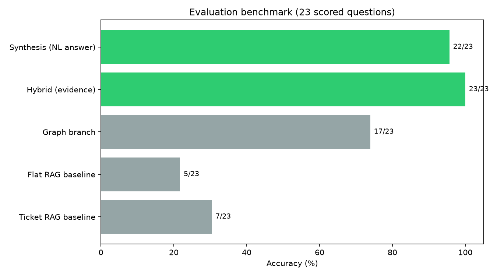
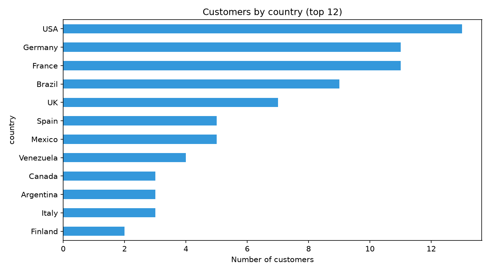
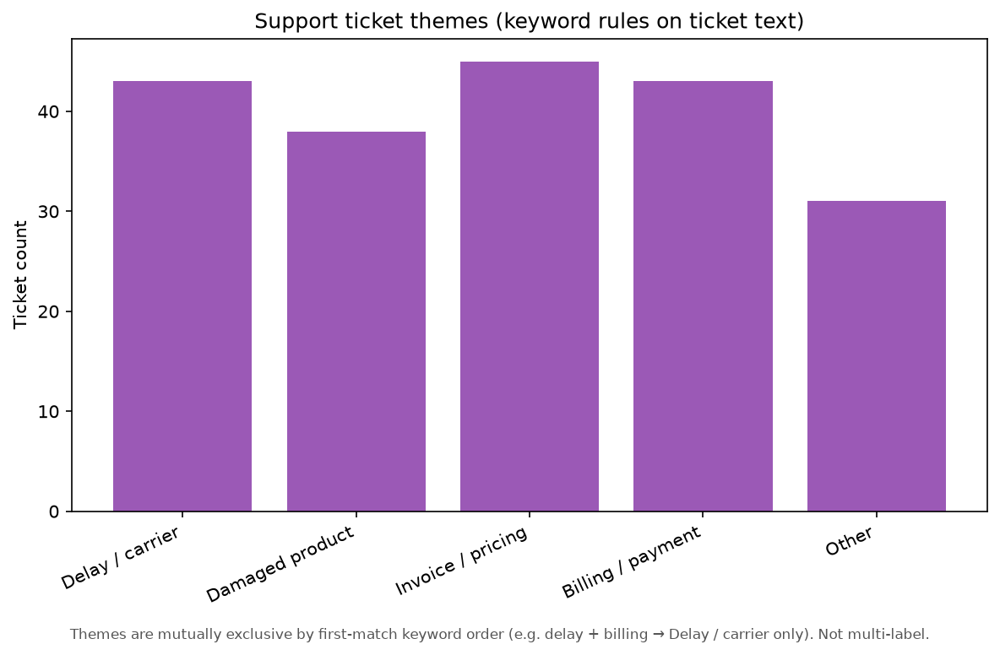

Generated by viz/build_charts.py. Data from eval JSON and Northwind CSVs only — no LLM or live DB calls.


Ticket themes are mutually exclusive by first-match keyword order (a ticket mentioning both “delay” and “billing” is bucketed only under whichever pattern is checked first). Not multi-label categorization.
